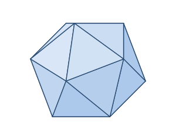

A regular icosahedron is a solid made of twenty identical equilateral triangles, with five meeting at each vertex. It has the most faces of any Platonic solid, which makes it the roundest of the five and a good approximation of a sphere. Every edge has the same length a.
Its most famous form is the d20 die at the heart of Dungeons & Dragons; the shape also appears in the protein shells of many viruses and in geodesic dome designs.
A regular icosahedron is defined by a single edge length a.
| Faces | 20 (equilateral triangles) |
|---|---|
| Edges | 30 |
| Vertices | 12 |
| Edge length | a |
As a Platonic solid it satisfies Euler's formula: V − E + F = 12 − 30 + 20 = 2.
Volume V = (5⁄12)(3 + √5)·a³
Surface area SA = 5√3 · a²
Take a regular icosahedron with edge a = 2.
V = (5⁄12)(3 + √5)·a³ = (5⁄12)(3 + √5)(8) ≈ 17.45
SA = 5√3 · a² = 5√3 × 4 = 20√3 ≈ 34.64
The icosahedron is the "dual" of the dodecahedron — its 20 faces match the dodecahedron's 20 vertices, and its 12 vertices match the dodecahedron's 12 faces. Many viruses adopt this shape because it wraps the most volume in the fewest repeated protein pieces.